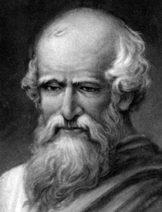

Архимед

Архимед (287 г. до н. э. – 212 г. до н. э.) – древнегреческий математик, физик и инженер и Сиракуз. Сделал множество открытий в геометрии. Заложил основы механики, гидростатики, был автором ряда важных изобретений.
Архимед – древнегреческий учёный, математик и механик из Сиракуз. Развил методы нахождения площадей поверхностей и объёмов различных фигур и тел. Его математические работы намного опередили своё время и были правильно оценены только в эпоху создания дифференциального и интегрального исчислений. Архимед – пионер математической физики, один из создателей механики как науки. Математика в его работах систематически применяется к исследованию задач естествознания и техники. Архимеду принадлежат различные технические изобретения. Архимед родился в Сиракузах (о. Сицилия) и жил в этом городе в эпоху 1-й и 2-й Пунических войн. Предполагают, что он был сыном астронома Фидия. Научную деятельность начал как механик и техник. Архимед совершил поездку в Египет и сблизился с александрийскими учёными, в том числе с Кононом и Эратосфеном. Это послужило толчком к развитию его выдающихся способностей. Архимед был близок к сиракузскому царю Гиерону II. Во время 2-й Пунической войны Архимед организовал инженерную оборону Сиракуз от римских войск. Его военные машины заставили римлян отказаться от попыток взять город штурмом и вынудили их перейти к длительной осаде. При взятии города войсками Марцелла Архимед был убит римским солдатом, которого, по преданию, встретил словами "не трогай моих чертежей". На могиле Архимед был поставлен памятник с изображением шара и описанного около него цилиндра. Эпитафия указывала, что объёмы этих тел относятся, как 2 : 3 – открытие Архимеда, которое он особенно ценил. Работы Архимеда показывают, что он был прекрасно знаком с математикой и астрономией своего времени, и поражают глубиной проникновения в существо рассматриваемых задач. Ряд работ имеет вид посланий к друзьям и коллегам. Иногда Архимед предварительно сообщал им без доказательств свои открытия, с тонкой иронией добавляя несколько неверных предложений. В IX-XI вв. работы Архимеда переводились на арабский язык, с XIII в. они появляются в Западной Европе в латинском переводе. С XVI в. начинают выходить печатные издания Архимеда, в XVII-XIX вв. они переводятся на новые языки. Первое издание отдельных трудов Архимеда на русском языке относится к 1823 г. Некоторые работы Архимеда до нас не дошли или известны лишь в отрывках, а его "Послание к Эратосфену" было найдено лишь в 1906 г. Центральной темой математических работ Архимеда являются задачи на нахождение площадей поверхностей и объёмов. Решение многих задач этого типа Архимеда первоначально нашёл, применяя механические соображения, по существу сводящиеся к методу "неделимых", а затем строго доказал методом исчерпывания, который он значительно развил. Рассмотрение Архимедом двусторонних оценок погрешности при проведении интеграционных процессов позволяет считать его предшественником не только И. Ньютона и Г. Лейбница, но и Г. Римана. Архимед вычислил площадь эллипса, параболического сегмента, нашёл площадь поверхности конуса и шара, объём шара и сферического сегмента, а также различных тел вращения и их сегментов. Архимед исследовал свойства т. н. архимедовой спирали. Дал построение касательной к этой спирали, нашёл площадь её витка. Здесь он выступает как предшественник методов дифференциального исчисления. Архимед рассмотрел также одну задачу изопериметрического типа. В ходе своих исследований он нашёл сумму бесконечной геометрической прогрессии со знаменателем 1/4, что явилось первым примером появления в математике бесконечного ряда. При исследовании одной задачи, сводящейся к кубическому уравнению, Архимед выяснил роль характеристики, которая позже получила название дискриминанта. Архимеду принадлежит формула для определения площади треугольника через три его стороны (неправильно именуемая формулой Герона). Архимед дал (не вполне исчерпывающую) теорию полуправильных выпуклых многогранников (архимедовы тела). Особое значение имеет аксиома Архимеда: из неравных отрезков меньший, будучи повторен достаточное число раз, превзойдёт больший. Эта аксиома определяет т. н. архимедовскую упорядоченность, которая играет важную роль в современной математике. Архимед построил счисление, позволяющее записывать и называть весьма большие числа. Он с большой точностью вычислил значение числа пи и указал пределы погрешности. Механика постоянно находилась в круге интересов Архимеда. В одной из своих первых работ он исследует распределение нагрузок между опорами балки. Архимеду принадлежит определение понятия центра тяжести тела. Применяя, в частности, интеграционные методы, он нашёл положение центра тяжести различных фигур и тел. Архимед дал математический вывод законов рычага. Ему приписывают гордую фразу: "Дай мне, где стать, и я сдвину Землю". Архимед заложил основы гидростатики. Он сформулировал основные положения этой дисциплины, в том числе знаменитый закон Архимеда. Последняя работа Архимеда посвящена исследованию равновесия плавающих тел. При этом он выделяет устойчивые положения равновесия. Архимед изобрёл водоподъёмный механизм, т. н. архимедов винт, который явился прообразом корабельных, а также воздушных винтов. Рассказывают, что Архимед нашёл решение задачи об определении количества золота и серебра в жертвенной короне Гиерона, когда садился в ванну, и нагим побежал домой с криком "эврика!" ("нашёл!"). Архимед занимался также астрономией. Он сконструировал прибор для определения видимого (углового) диаметра Солнца и нашёл значение этого угла с поразительной точностью. При этом Архимед вводил поправку на размер зрачка. Он первым стал приводить наблюдения к центру Земли. Наконец, Архимед построил небесную сферу – механический прибор, на котором можно было наблюдать движения планет, фазы Луны, солнечные и лунные затмения.